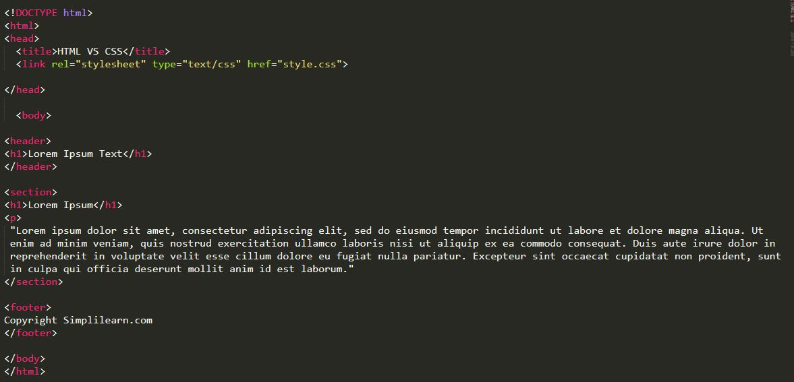
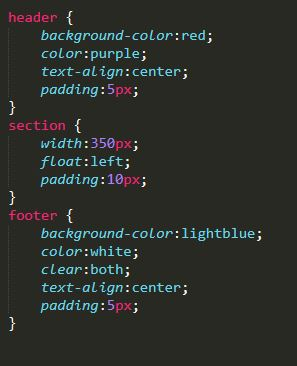

Asignment Solutions
What is an HTML Semantic Tag and Why Do You Need To Use It?
The HTML semantics refers to the tags that provide meaning to an HTML page rather than just presentation. It makes HTML more comprehensible by better defining the different sections and layout of web pages.
The core characteristic of a semantic element is that it clearly communicated its meaning to both the developer and the browser. These elements clearly define its content.
Why Do You Need to Use Semantic Tags in HTML?
The are several advantages of using semantics tags in HTML:
- The semantic HTML tags help the search engines and other user devices to determine the importance and context of web pages.
- The pages made with semantic elements are much easier to read.
- It has greater accessibility. It offers a better user experience.
HTML Semantic Tag Structure
The following HTML tags can be used to break your page into identified parts:
Examples of Semantics used in html and css


View The Second Assignment